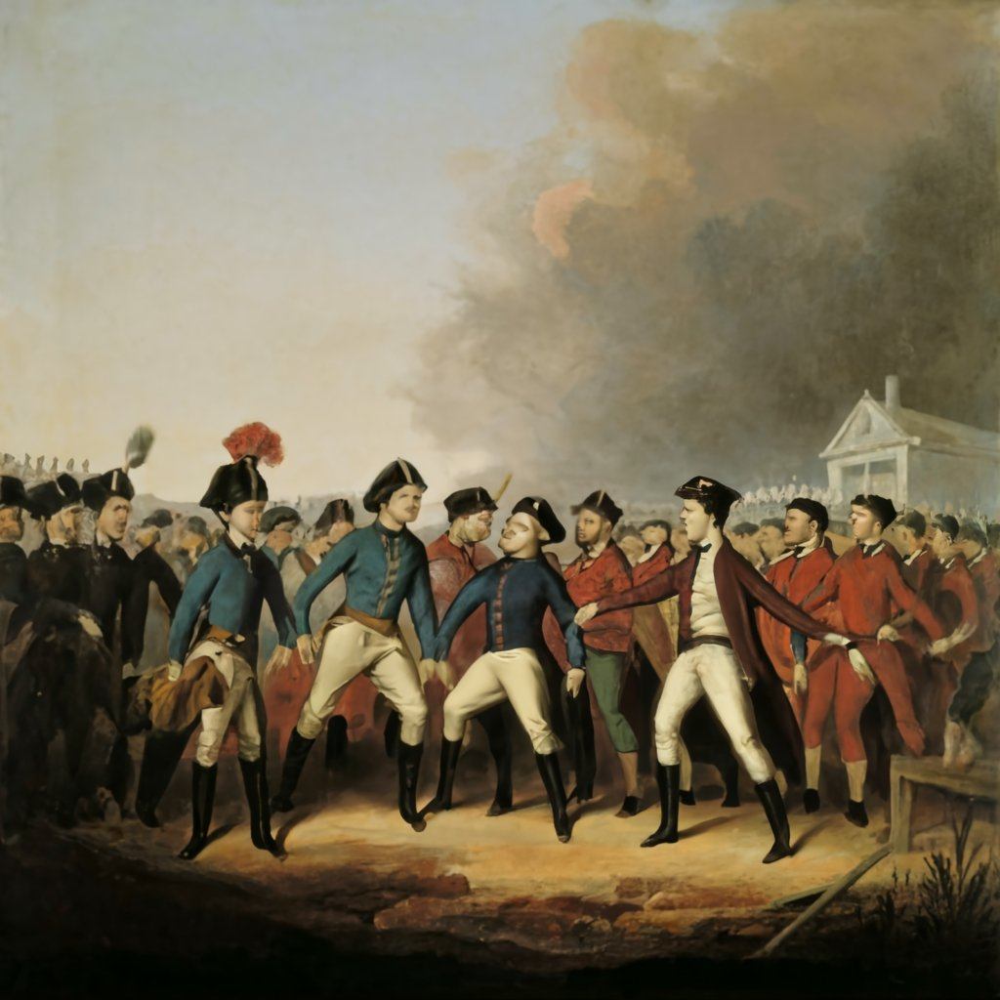

La Guerra de los Pasteles (1838-1839)
La Guerra de los Pasteles, también conocida como la "Guerra de la Torta," fue un conflicto breve pero peculiar que tuvo lugar entre México y Francia de 1838 a 1839. El detonante fue una serie de disputas sobre deudas impagas y daños a propiedades de ciudadanos franceses en México.
La historia a menudo nos presenta eventos extraordinarios que, a primera vista, parecen provenir de un guion de comedia más que de un relato histórico. Tal es el caso de la Guerra de los Pasteles, también conocida como la "Guerra de la Torta," un curioso conflicto que tuvo lugar entre México y Francia entre 1838 y 1839. El Chisporroteo Inicial: Un Panadero Ofendido El conflicto se gestó a partir de disputas financieras y reclamaciones de daños a propiedades de ciudadanos franceses en México. La chispa que encendió la mecha fue el testimonio de un panadero francés, quien afirmó que sus mercancías habían sido saqueadas en la ciudad mexicana de Tacubaya. En respuesta, el gobierno francés, encabezado por el rey Luis Felipe I, exigió compensación a México. La Respuesta Mexicana y la Llegada de las Tropas Francesas La respuesta mexicana fue menos conciliadora de lo que esperaba París. México, bajo el liderazgo del presidente Anastasio Bustamante, se negó a pagar las indemnizaciones exigidas por los franceses. Esta negativa llevó a que las tropas francesas, bajo el mando del almirante Charles Baudin, desembarcaran en Veracruz en abril de 1838.